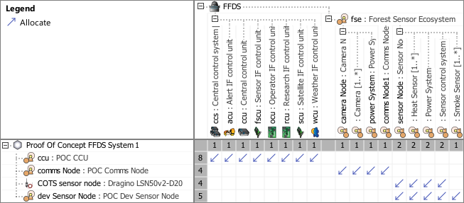

P8_PLOM Physical Logical Mapping Viewpoint
| Domain | Aspect | Maturity |
|---|---|---|
| Physical | Traceability & Mapping |

The Physical Logical Mapping Viewpoint supports the definition of the assignment of conceptual logical system elements to physical system elements comprising the SOI.
Following the identification of physical system elements capable of performing the system functions of logical elements, the Physical Logical Mapping Viewpoint provides feedback to the System Architecture Definition process to consolidate or confirm the allocation, partitioning, and alignment of logical elements to physical elements that comprise the SOI.
The Physical Logical Mapping Viewpoint supports the “Design Definition Process” activities of the INCOSE SYSTEMS ENGINEERING HANDBOOK 2023 [§2.3.5.5] and contributes to the artifact “Traceability Mapping”.
Furthermore, the Physical Logical Mapping Viewpoint supports the “Allocation and Partitioning of Logical Entities to Physical Entities” activities of the INCOSE SYSTEMS ENGINEERING HANDBOOK 2015 [§4.4.2.7].
A assignment matrix featuring
The following Stereotypes / Model Elements are used in the Viewpoint: